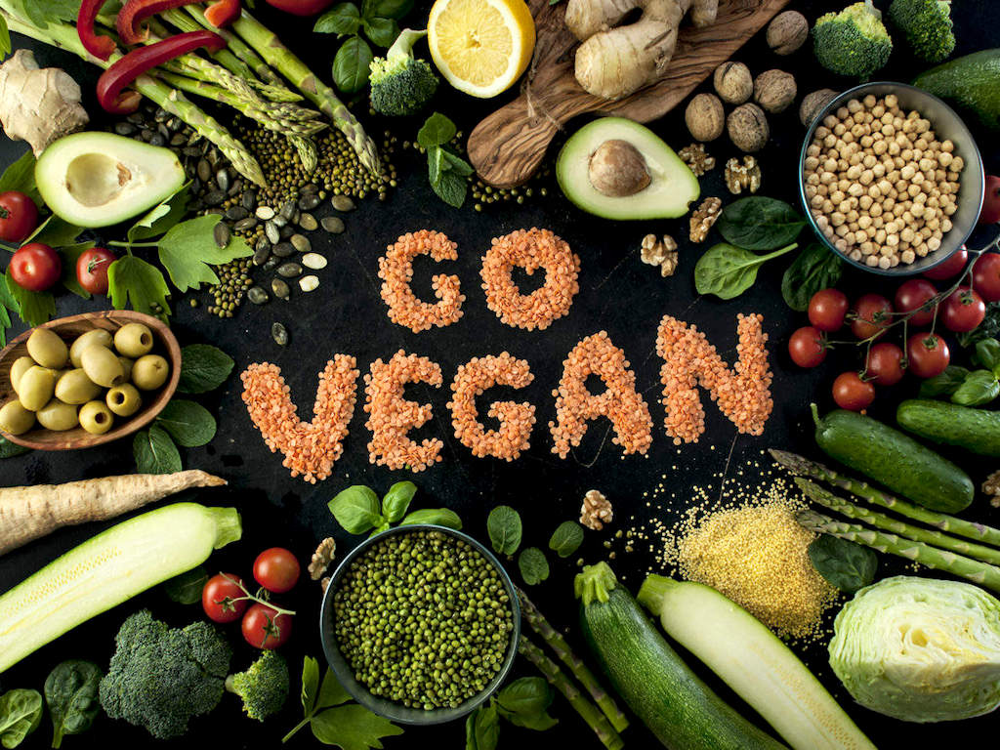

MY VEGAN JOURNEY

Join our community to find all the information you need to became thoughtful about the food you are consuming.
We will work together in this journey so you can:
- Know how each food causes a different process and reaction in your body.
- Learn about the benefits of a plant-based diet.
- Be aware of the impact that a change in your diet have in our environment.
Follow with us the next steps:
- Reseach for information and understand what you are eating.
- Try different recipes and improve your "Vegan Cooking Skills".
- Share with us and our community your progress. Our blog is open to help us mutually.
Links of our favorite Websites:
Save the planet
Healthy plant-based diet
The top 10 vegan dessert recipes